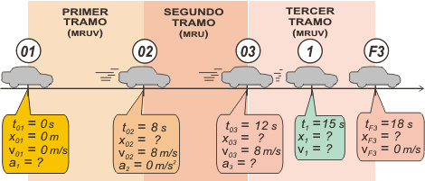

|
NO ME SALEN
PROBLEMAS RESUELTOS DE BIOFÍSICA DEL CBC
(Movimiento uniformemente variado)
|
|

|
| |
 |
EM 25) Un cuerpo describe una trayectoria rectilínea con una velocidad tal que en los primeros 8
seg varía de 0 m/s a 8 m/s, se mantiene constante en los 4 seg siguientes y disminuye
uniformemente hasta 0 m/s en los siguientes 6 seg. ¿Qué velocidad (v1) tiene el cuerpo en
t = 15 seg (en m/s)?
a) v1 = 2,4 b) v1 = 4 c) v1 = 4,2
d) v1 = 8 e) v1 = 0,8 f) v1 = 1,2 |
Este ejercicio se puede resolver enteramente con el uso de razonamientos sencillos, algunos de tipo geométrico, otros de pura y simple lógica. También se puede resolver utilizando ecuaciones horarias... cosa que implica una enseñanza más profunda.
Acá te lo voy a resolver de las dos maneras, primero el simple y práctico, después el profundo y riguroso... y creo que ambas formas se van a potenciar mutuamente. Acompañame.
Prestá atención solamente al gráfico del medio: el de velocidad en función del tiempo. Ese es el gráfico que haría cualquier persona que leyendo el enunciado vuelca los datos en un gráfico. |
|
 |
Ahí se ve claramente cómo en el primer tramo la velocidad aumenta en forma constante desde 0 hasta 8 m/s. Cómo mantiene esa velocidad durante el segundo tramo. Y cómo la disminuye hasta 0 en el tercer tramo.
En el eje de las abscisas (los tiempos) coloqué los valores correspondientes a una única escala de tiempo... Así podés ver que el instante al que corresponde la pregunta del enunciado, los 15 s, se halla justo en la mitad del intervalo del tercer tramo (de 12 a 15 hay lo mismo que de 15 a 18).
La velocidad 1, entonces, deberá situarse en la mitad de los extremos del intervalo de velocidad (si querés un razonamiento más refinado podés recurrir a la regla de 3 simple, o a las propiedades de los triángulos semejantes, etc.) |
|
| |
|
|
|
Si entendiste la idea, entonces podrás contestarme rápidamente cuánto vale la velocidad en el instante 4 s. ¿Y en 16 s? Bueno, antes de arrancar con el método puntilloso vamos a completar -como siempre- los gráficos del tándem x/v/a. Las áreas encerradas bajo la curva de velocidad representan el desplazamiento correspondiente. Son áreas sencillas: triángulos y rectángulos. Así por ejemplo se sabe que el primer tramo, que se corresponde con un MRUV, cuya gráfica de posición-tiempo es un arco de parábola de concavidad positiva, finaliza en el metro 32.
Terminá vos de analizar los gráficos. Hay decenas de detalles que podés encontrar y te van a servir para afianzar tus conocimientos de cinemática. Aprovechalos.
Vamos al método convencional. Hagamos un esquema. |
|
|
|  |
|
|
El instante inicial de cada tramo es el mismo que el final del tramo anterior, claro está.
Escribo las ecuaciones tomando los modelos correspondientes a cada movimiento y tomando las constantes iniciales igual a lo que indican los globitos del esquema. Controlá que estén bien escritas: |
|
|
| Primer tramo |
x = ½ a1 . t ² |
| v = a1 . t |
| Segundo tramo |
x = x02 + 8 m/s . ( t – 8 s) |
| Tercer tramo |
x = x03 + 8 m/s ( t – 12 s) + ½ a2 ( t – 12 s)² |
| v = 8 m/s + a2 ( t – 12 s) |
|
|
|
Con las ecuaciones calculo todas las incógnitas... Empiezo usando las del primer tramo, les pido que hablen de su instante final (inicial del segundo):
x02 = ½ a1 . (8 s)²
8 m/s = a1 . 8 s
De ahí surge que a1 = 1 m/s² y x02 = 32 m... (qué difícil...). Ahora uso la tercera ecuación, la del segundo tramo (hablando del instante inicial del tercero):
x03 = x02 + 8 m/s . ( 12s – 8 s)
Entonces, x03 = 64 m (¡ya me estresé!). Ahora uso las últimas ecuaciones, las del tercer tramo, y les pido que hablen del instante final, y después, del instante 1 (15 s).
xF3 = x03 + 8 m/s ( 18 s – 12 s) + ½ a2 ( 18 s – 12 s)²
0 m/s = 8 m/s + a2 ( 18 s – 12 s)
De ahí surge que a2 = – 1,33 m/s² y xF3 = 88 m... (ya lo sabíamos).
v1 = 8 m/s – 1,33 ( 15 s – 12 s)
|
|
|
|
|
|
A este mismo ejercicio, le damos una vuelta más de tuerca en el EM27, de Dinámica. |
|
 |
| Desafío: Hallar la posición y velocidad de los instantes 5,5 s, 9,5 s y 13,5 s. |
|
|
|
| Algunos derechos reservados.
Se prohibe estrictamente leer este ejercicio resuelto por encima, hay que leerlo despacio y con atención. Las penalizaciones a esta infracción son severas. Se permite su reproducción citando la fuente. Última actualización nov-08. Buenos Aires, Argentina. |
|
|
|